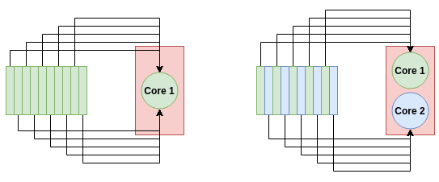

By default, Pandas executes its functions as a single process using a single CPU core. That works just fine for smaller datasets since you might not notice much of a difference in speed. But with larger datasets, speed starts to take a major hit when using only a single core. It’s doing just one calculation at a time for a dataset that can have millions or even billions of rows.
Modin is a new library designed to accelerate Pandas by automatically distributing the computation across all of the system’s available CPU cores. With that, Modin claims to be able to get nearly linear speedup to the number of CPU cores on your system for Pandas DataFrames of any size.
Documentation:
Parallelizing a calculation is as easy as applying that calculation on different data points across every available CPU core. For a Pandas DataFrame, a basic idea would be to divide up the DataFrame into a few pieces, as many pieces as you have CPU cores, and let each CPU core run the calculation on its own piece. In the end, we can aggregate the results, which is a computationally cheap operation.

That’s exactly what Modin does. It slices your DataFrame into different parts such that each part can be sent to a different CPU core. Modin partitions the DataFrames across both the rows and the columns. This makes Modin’s parallel processing scalable to DataFrames of any shape.
Imagine if you are given a DataFrame with many columns but fewer rows. Some libraries only perform the partitioning across rows, which would be inefficient in this case since we have more columns than rows. But with Modin, since the partitioning is done across both dimensions, the parallel processing remains efficient all shapes of DataFrames, whether they are wider (lots of columns), longer (lots of rows), or both.

To do a lot of the heavy lifting when it comes to executing the parallel processing, Modin can use either Dask or Ray. Both of them are parallel computing libraries with Python APIs and you can select one or the other to use with Modin at runtime. Ray will be the safest one to use for now as it is more stable — the Dask backend is experimental.
!pip install modin[ray]
import modin.pandas as pd
By default, Modin will use all of the CPU cores available on your machine. There may be some cases where you wish to limit the number of CPU cores
import ray
ray.init(num_cpus=4, ignore_reinit_error=True)
import modin.pandas as pd
When working with big data, it’s not uncommon for the size of the dataset to exceed the amount of memory (RAM) on your system. Modin has a specific flag that we can set to true which will enable its out of core mode. Out of core basically means that Modin will use your disk as an overflow storage for your memory, allowing you to work with datasets far bigger than your RAM size. We can set the following environment variable to enable this functionality:
!export MODIN_OUT_OF_CORE=true